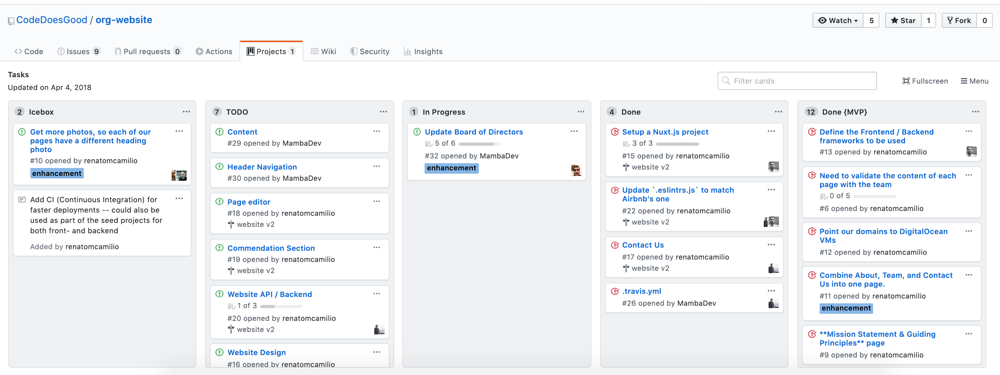

6 Project management using GitHub
Learning Objectives
- Use GitHub issues to label and assign tasks
- Create project boards using GitHub and link tasks to issues
- Create GitHub milestones to group related issues
- Set-up main branch protection on a GitHub repository
- Review and merge a pull request with main branch protection
6.1 Project boards
Example of a physical Kanban board:

Source: https://medium.com/@mli/lets-get-physical-task-boards-f9d08383e667
Example of a digital project board from GitHub:
Reading: About project boards - GitHub Help

Source: https://github.com/CodeDoesGood/org-website/projects/1
6.1.1 Why use project boards for collaborative software projects?
Transparency: everyone knows what everyone is doing
Motivation: emphasis on task completion
Flexibility: board columns and tasks are customized to each project
Getting to know GitHub project boards
We are going to each create our own project board for our homework. I have set-up a template GitHub repository for you so that you can easily populate it with relevant issues for your assignment. You will use these issues to create your assignment project board.
Steps:
Click the green “Use this template” button from this GitHub repository to obtain a copy of it for yourself (do not fork it). (need help? see: How to import a GitHub repository).
Click on the Actions tab, and then click on the workflow
.github/workflows/create_issues.yml. You then should see a “Run workflow” button with a drop down menu, from that menu select “Run workflow”.Wait patiently while GitHub Actions to create 24 issues for you in your copy of this repository.
Click on the Projects tab, and then click “Link a project” and then select “Create a new Project”. Select “Board” as the template option and give the project a a name.
Use the issues in the repo to set-up a project board for the next two weeks (or more) of your DSCI 310 homework. For each issue you add to the project, assign it to yourself and add a label of “group-work” or “individual-work”.
Additional Resources:
- Assigning issues and pull requests to other GitHub users
- Applying labels to issues and pull requests
- You will be expected to create a project board for each of your groups projects and update it each milestone (at a minimum)
- We expect that each issue should have at least one person assigned to it
6.2 Milestones
Group related issues together that are needed to hit a given target (e.g., new release version of a software package)
Can assign a due date to a milestone
From the milestone page you can see list of statistics that are relevant to each milestone set in that repository
Reading: About milestones - GitHub Help
Example of the readr package milestones:

Source: https://github.com/tidyverse/readr/milestones
Getting to know GitHub milestones
We are going to practice creating milestones and associating issues with them. To do this we will continue working with the same repository that you just created a project board for.
Steps:
Click on the Issues tab, and then click on “Milestones”.
Click “New milestone” and name it “month 1” and set the due date to be the end of January. Click “Create milestone”.
Go to the Issues tab, and for each issue that should be associated with the month 1 milestone (i.e., things due before the end of January), click on their checkbox. Then click “Milestone” and select “month 1”
Once you are done, go back to the Milestones page to view what the month 1 milestone looks like.
If you finish early, do this for month 2.
- You will be expected to create a milestone on each of your project repositories for each course assigned milestone. You must link the relevant issues needed to complete that milestone to it on GitHub.
6.3 Better code reviews using in-line comments and suggested code fixes
We very often need to have a conversation to get pull requests into good shape before merging the changes into the main branch. GitHub has a very nice tool we can utilize to do this: GitHub code reviews. This tool allows us to add inline comments to proposed changes, as well as inline suggested changes that can be accepted with a click of a button. These features increase review efficiency and effectiveness!

Do a code review
Click the green “Use this template” button in this repository to obtain a copy of it for yourself (do not fork it).
Go to Repository Settings > Actions > General > under “Workflow permissions” make sure read and write permissions are enabled and also GitHub Actions is able to create and approve Pull Requests. Under “Actions permissions” select “Allow all actions and reuseable workflows”. It should look like this:

Click on the Actions tab, and then click on the workflow
.github/workflows/pr.yml. You then should see a “Run workflow” button with a drop down menu, from that menu select “Run workflow”.Click on the Pull Requests tab of your copy of the repository, click on the pull request titled “Report most accomplished pilots”, and then click on “Files Changed”. Next click on the
star-wars.Rmdfile. Review the file and observe the following problems with the R Markdown report that was submitted via the pull request:Reasoning of the sentence on line 15
Incompatibility with the sentence on line 15 with the code in the code chunk named
table-of-most-accomplished-pilotsIncorrect code in code chunk named
table-of-most-accomplished-pilots(unested film instead of starships) leads to naming the wrong pilot as the most accomplished pilot on line 19Incorrect code in code chunk named
table-of-most-accomplished-pilots(unested film instead of starships) leads to the use of the wrong character’s picture in the image that is sourced in the code chunk named top-pilot (it should be a picture of Obi-Wan Kenobi, you could use this URL for example: https://hips.hearstapps.com/hmg-prod.s3.amazonaws.com/images/ewan-mcgregor-obi-wan-1570898048.jpg).
Add comments and suggested changes using the
+sign beside the line numbers (the first time you do this will trigger the start of your code review. Need help? See GitHub’s how to on reviewing proposed changes in a pull request.After you have made all the comments and suggested changes, then add a general comment for the code review, select “Request Changes” and submit your code review.
6.4 Main branch protection
Once we have developed the first working version of our software (that will be the end of week 2 for us in this course), we want to consider our main branch as the deployment branch.
What do we mean by deployment branch? Here we mean that other people may be using and depending on it, and thus, if we push changes to main they must not break things!
How do I make sure changes won’t break things?
There are varying levels of checks and balances that can be put in place to do this. One fundamental practice is main branch protection. Here we essentially put a rule in place that no one can push directly to main, all changes to main must be sent via a pull request so that at least one entity (e.g., human) can check things over before the change gets applied to the main (i.e., deployment) branch.
Readings: - About protected branches.
6.4.1 How to accept a pull request on a GitHub repository that has main branch protection
(note: at the time of video making, the default branch on GitHub as still called the master branch)
Setting up main branch protection
We are going to practice setting up main branch protection. Once we set this up on our play repository linked to below, we will practice branching and pull requests to send changes to the main branch in a later exercise.
Steps:
Import a copy of this GitHub repository (need help? see: How to import a GitHub repository)
Add main branch protection to your copy of this repository by going to Setting > Branches > Branch protection rules and selecting “Add branch protection rule”. Add “main” as the Branch pattern name and tick the box “Require a pull request before merging”. Keep “Require approvals” selected as well.
Try to make a change by pushing directly to the main branch
You are not required to use this for the project, but it can be useful on the job. Especially when you add new developers or maintainers to your GitHub repos.